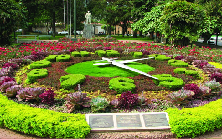
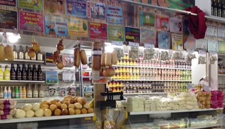

Pontos Turísticos
Cachoeira Véu das Noivas

Localizada dentro do complexo Turístico Véu das Noivas, a cachoeira é formada por três quedas d'água que constituem corredeiras que encantam os olhos de quem admira. No local ainda é possível dar um passeio de trenzinho pelos limites do complexo, o que permite contemplar toda a beleza do local, formada por pinheiros e plantas ornamentais.
Cristo Redentor

Idealizado e concretizado por José Raphael dos Santos Neto, inspirado no monumento do Rio de Janeiro, encontra-se no alto da Serra de São Domingos, a 1686 metros acima do nível do mar, o Cristo Redentor, um dos cartões postais mais conhecidos de Poços de Caldas, que além de se ter a oportunidade de avistar a cidade inteira,o turista conta com atrações como por exemplo o passeio de paraglaider.
Thermas Antônio Carlos

O prédio inaugurado na década de 1930, com uma arquitetura onde predomina o estilo neoclássico, que já foi cenário da novela "Alto Astral", da Rede Globo e que também recebeu o ex-presidente da república Getúlio Vargas, é um atrativo para o turista se desfrutar com banhos termais que curam e relaxam, além de massagem facial e terapêutica, limpeza de pele, sulfuterapia, dentre outros. Os valores variam de acordo com os serviços oferecidos.
Recanto Japonês

Um ambiente onde exala o conjunto paz e tranquilidade com a natureza, o Recanto Japonês é uma viagem a cultura oriental que conta com um caramanchão Azumaya, réplica do Manj-Tei que existiu nos jardins do palácio imperial japonês,feito de madeira e telhado de palha. Lá também encontra-se uma Fonte dos Três Desejos: amor, saúde e felicidade para que os turistas façam seus pedidos, além da Casa de Chá, onde havia a tradicional "Cerimônia do Chá", mas que infelizmente foi incendiada dia 29 de agosto de 2016.
Relógio Floral
Idealizado em 1972 e situado na Praça Getúlio Vargas, o Relógio Floral é composto em um canteiro repleto de vegetações rasteiras, onde os ponteiros giram sobre os números feitos de flores, gramas e pequenas plantas que marcam as horas corretamente. No local há também um monumento em homenagem aos Pracinhas para homenagear os ex-combatentes Poçoscaldenses que durante a Segunda Guerra Mundial,foram integrantes da Força Expedicionária Brasileira, FEB.
Mercado Municipal
Localizado na área central da cidade com 193 boxes internos e 54 boxes externos, o Mercado Municipal conta com os típicos produtos da cultura mineira como queijos, doces, cachaças, pimentas, artesanatos em madeira entre outros produtos.
Fonte dos Amores

Inaugurada em 1929, o local atrai pelo clima romântico criado pela escultura em mármore de um jovem casal abraçados, esculpida pelo italiano Giulio Starace. Duas lendas rodeiam o local, uma é a de um amor proibido, a outra é que quem beber a água da fonte não ficará solteiro. O caminho até o atrativo conta com hortências, trilhas, além de animais que vivem na mata e quiosques.